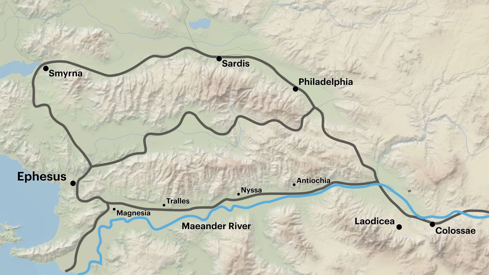

Sessão 6: Refletindo sobre o Design de Efésios 1-3Session 6: Reflecting on the Design of Ephesians 1-3
Principais Lições
- A mente e o coração de Paulo foram moldados pela Bíblia Hebraica e pelo templo.Paul's mind and heart were shaped by the Hebrew Bible and the temple.
- A literatura bíblica está cheia de simetria e repetição, e esse design ajuda na memorização e meditação.Biblical literature is full of symmetry and repetition, and this design helps with memorization and meditation.
- Efésios pode ter sido uma carta que Paulo escreveu a todas as comunidades da igreja no vale do rio Lico, começando com a igreja em Éfeso.Ephesians may have been a letter Paul wrote to all the church communities in the Lycus River valley, starting with the church in Ephesus.
O Público de Paulo está em Éfeso?
Embora a maioria das traduções modernas inclua "aos santos em Éfeso" na abertura da carta (Ef 1:1), alguns manuscritos antigos não trazem as palavras "em Éfeso". É possível que Efésios, desde sua forma mais antiga, tenha sido destinada a ampla circulação na Igreja.Although most modern translations include "to the saints in Ephesus" in the letter's opening (Eph. 1:1), some early manuscripts do not include the words "in Ephesus". It is possible that Ephesians has been, since its earliest form, intended for broad circulation within the Church.
"As palavras ἐν Ἐφέσῳ estão ausentes de várias testemunhas importantes (P46 ℵ* B* 424c 1739), bem como de manuscritos mencionados por Basílio e do texto usado por Orígenes. Certas características internas da carta, juntamente com a designação de Marcião da epístola como 'Aos Laodicenses' e a ausência em Tertuliano e Efrem de uma citação explícita das palavras ἐν Ἐφέσῳ, levaram muitos comentaristas a sugerir que a carta foi destinada como um encíclica, enviando-se cópias a várias igrejas, da qual a de Éfeso era a principal. Visto que a carta tem sido tradicionalmente conhecida como 'Aos Efésios', e visto que todas as testemunhas exceto as mencionadas acima incluem as palavras ἐν Ἐφέσῳ, o Comitê decidiu retê-las, mas entre colchetes." Metzger, Bruce M. (1994). A Textual Commentary on the Greek New Testament. United Bible Societies. 532."The words ἐν Ἐφέσῳ are absent from several important witnesses (P46 ℵ* B* 424c 1739) as well as from manuscripts mentioned by Basil and the text used by Origen. Certain internal features of the letter as well as Marcion's designation of the epistle as 'To the Laodiceans' and the absence in Tertullian and Ephraem of an explicit quotation of the words ἐν Ἐφέσῳ have led many commentators to suggest that the letter was intended as an encyclical, copies being sent to various churches, of which that at Ephesus was chief. Since the letter has been traditionally known as 'To the Ephesians,' and since all witnesses except those mentioned above include the words ἐν Ἐφέσῳ, the Committee decided to retain them, but enclosed within square brackets." Metzger, Bruce M. (1994). A Textual Commentary on the Greek New Testament. United Bible Societies. 532.
"Os manuscritos mais antigos e melhores do Novo Testamento omitem a frase 'em Éfeso' de 1:1. É bem possível, então, que este documento tenha sido destinado como uma carta circular e que os crentes em Éfeso não fossem o único público pretendido. O conteúdo de Efésios parece apoiar tal teoria. Há muito pouca indicação de situações específicas sendo abordadas, ou de uma comunidade concreta que se visualize. As exortações e avisos para evitar erro doutrinário parecem bastante gerais. Além disso, o texto pressupõe que os destinatários não tiveram contato direto com Paulo (1:15; 3:2), sugerindo um público outro que, ou ao menos mais amplo que, Éfeso, onde Paulo passou considerável tempo. É provável... que esta carta 'circular' se associasse a Éfeso porque se destinava a circular por toda a província da Ásia, da qual Éfeso era a capital e o epicentro de onde o evangelho de Paulo se espalhou pela província (ver At 19:10)." Gorman, Michael (2003). Apostle of the Crucified Lord: A Theological Introduction to Paul and His Letters. Eerdmans. 576."The earliest and best New Testament manuscripts omit the phrase 'in Ephesus' from 1:1. It is quite possible, then, that this document was intended as a circular letter and that believers in Ephesus were not the only intended audience. The contents of Ephesians seem to support such a theory. There is very little hint of any specific situations being addressed, or of one concrete community that's envisioned. The exhortations and warning to avoid doctrinal error seem quite general. Furthermore, the text assumes that the recipients have not have direct contact with Paul (1:15; 3:2), suggesting an audience other than, or at least wider than, Ephesus where Paul spent considerable time. It is likely ... that this 'circular' letter became associated with Ephesus because it was intended to circulate throughout the province of Asia, of which Ephesus was the capital and epicenter from which Paul's gospel spread through the province (see Acts 19:10)." Gorman, Michael (2003). Apostle of the Crucified Lord: A Theological Introduction to Paul and His Letters. Eerdmans. 576.
Éfeso no Mundo Romano Antigo
Fundada por volta de 1000 a.C. por colonos gregos, Éfeso ascendeu a proeminência como parte do império Lídio, que fundou a cidade como lar de Ártemis de Éfeso. Na era romana (séc. I a.C.), tornou-se a capital da província romana da Ásia sob o domínio de César Augusto. Ao tempo de Paulo, era um centro para o culto a César, onde o imperador era adorado como o filho divino da deusa Roma.Founded around 1000 B.C.E. by Greek settlers, Ephesus rose to prominence as part of the Lydian empire, which founded the city as the home of Artemis of Ephesus. In the Roman era (1st century B.C.E.), it became the capital of the Roman province of Asia under the rule of Caesar Augustus. By Paul's day, it was a center for the cult of Caesar, where the emperor was worshiped as the divine son of the goddess Roma.
Éfeso era uma cidade portuária (seu porto já desapareceu devido à erosão) e ficava em todas as estradas entre as regiões orientais do império e as rotas para a Grécia e Roma.Ephesus was a port city (its harbor is now gone because of erosion) and was on all the highways between the eastern regions of the empire and the roads to Greece and Rome.
Era também arquitetonicamente impressionante, com um enorme teatro de 10.000 pessoas, dois grandes mercados e templos a Apolo, Roma e Ártemis (uma das sete maravilhas do mundo antigo).It was also architecturally impressive, with a huge 10,000-person theater, two large markets, and temples to Apollo, Roma, and Artemis (one of the seven wonders of the ancient world).

Pergunta de Reflexão
Você tem alguma pergunta ou observação sobre o design de Efésios 1-3?Do you have any questions or observations about the design of Ephesians 1-3?